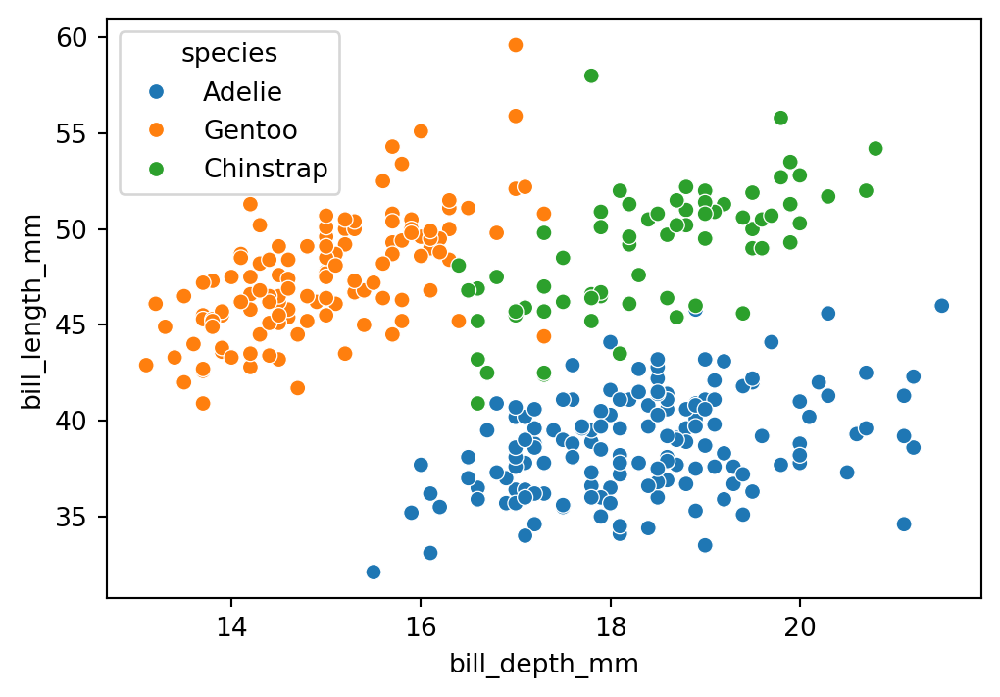

print("Hello world!")Tools for Data Analysis and Visualization
IN2039: Data Visualization for Decision Making
Agenda
- Introduction to Python
- Reading data with Python
- Creating our first plot
Introduction to Python
Python
A versatile programming language.
It is free!
It is widely used for data cleaning, data visualization, and data modelling.
It can be extended with packages (libraries) developed by other users.

Google Colab
Google’s free cloud collaboration platform for creating Python documents.
Run Python and collaborate on Jupyter notebooks for free.
Harness the power of GPUs for free to accelerate your data science projects.
Easily save and upload your notebooks to Google Drive.

Let’s try a command in Python
What do you think will happen if we run this command?
. . .
Hello world!Let’s try another command
What do you think will happen if we run this command?
sum([1, 5, 10]). . .
16Use Python as a basic calculator
5 + 1610 - 372 * 489 / 33.0Introduction to functions in Python
One of the cool things about Python is that there are many built-in commands you can use. These are called functions.
. . .
Functions have two basic parts:
The first part is the name of the function (for example,
sum).The second part is the input to the function, which goes inside the parentheses (
sum([1, 5, 15])).
Python is strict
Python, like all programming languages, is very strict. For example, if you write
sum([1, 100])101it will tell you the answer, 101.
. . .
But if you write
Sum([1, 100])--------------------------------------------------------------------------- NameError Traceback (most recent call last) Cell In[11], line 1 ----> 1 Sum([1, 100]) NameError: name 'Sum' is not defined
with the “s” capitalized, he will act like he has no idea what we are talking about!
lo mismo si olvidas incluir un parentesis
Save your work in Python objects
Virtually anything, including the results of any Python function, can be saved in an object.
This is accomplished by using an assignment operator, which can be an equals symbol (=).
. . .
You can make up any name you want for a Python object. However, there are three basic rules for this:
- It has to be different from a function name in Python.
- It has to be specific possible yet succinct.
- It must not have a period (.) in it.
For example
# This code will assign the number 18
# to the object called my_favorite_number
my_favorite_number = 18After running this code, nothing happens. But if we run the object on its own, we can see what’s inside it.
my_favorite_number18You can also use print(my_favorite_number).
Lists
So far we have used Python objects to store a single number. But in statistics we are dealing with variation, which by definition needs more than one number.
. . .
A Python object can also store a complete set of numbers, called a list.
You can think of a list as a vector of numbers (or values).
. . .
The [] command can be used to combine several individual values into a list.
puedes pensar que el c es por combinar
For example
This code creates two lists or vectors:
my_list = [1, 2, 3, 4, 5]
my_list_2 = [10, 10, 10, 10, 10]. . .
Let’s see their content:
my_list[1, 2, 3, 4, 5]my_list_2[10, 10, 10, 10, 10]Operations
We can do simple operations with vectors. For example, we can sum all the elements of a list.
my_list = [1, 2, 3, 4, 5]
sum(my_list)15Indexing
We can index a position in the vector using square brackets with a number like this: [1].
So, if we wanted to print the contents of the first position in my_list, we could write
my_list[1]2An feature of Python is that the first element of a list or vector is indexed using the number 0.
my_list[0]1A little more about Python objects
You can think of Python objects as containers that hold values.
A Python object can hold a single value, or it can hold a group of values (as in a vector).
So far, we’ve only put numbers into Python objects.
. . .
Python objects can actually contain three types of values: numbers, characters, and booleans.
Character values
Characters are made up of text, such as words or sentences. An example of a list with characters as elements is:
. . .
many_greetings = ["hi", "hello", "hola", "bonjour", "ni hao", "merhaba"]
many_greetings['hi', 'hello', 'hola', 'bonjour', 'ni hao', 'merhaba']. . .
It is important to know that numbers can also be treated as characters, depending on the context.
For example, when 20 is enclosed in quotes ("20") it will be treated as a character value, even though it encloses a number in quotes.
Boolean values
Boolean values are True or False.
We may have a question like:
- Is the first element of the vector
many_greetings"hola"?
. . .
We can ask Python to find out and return the answer True or False.
many_greetings[1] == "hola"FalseLogical operators
Most of the questions we ask Python to answer with True or False involve comparison operators like >, <, >=, <=, and ==.
The double == sign checks whether two values are equal. There is even a comparison operator to check whether values are not equal: !=.
For example, 5 != 3 is a True statement.
Common logical operators
>(larger than)>=(larger than or equal to)<(smaller than)<=(smaller than or equal to)==(equal to)!=(not equal to)
Question
Read this code and predict its response. Then, run the code in Google Colab and validate if you were correct.
A = 1
B = 5
compare = A > B
compareProgramming culture: Trial and error
The best way to learn programming is to try things out and see what happens. Write some code, run it, and think about why it didn’t work.
There are many ways to make small mistakes in programming (for example, typing a capital letter when a lowercase letter is needed).
We often have to find these mistakes through trial and error.
Python libraries
Libraries are the fundamental units of reproducible Python code. They include reusable Python functions, documentation describing how to use them, and sample data.
In this course, we will be working mostly with the following libraries:
pandasfor data manipulation.matplotlibandseabornfor data visualization.statsmodelsfor data modelling.
Reading data with Python
Data organization
In data science, we organize data into rows and columns.
Condition Age Wt Wt2
1 Uninformed 35 136 135.8
2 Uninformed 45 162 161.8
3 Informed 52 117 116.8
4 Informed 29 184 182.8
5 Uninformed 38 134 136.6
6 Informed 39 189 183.2. . .
The rows are the sampled cases. In this example, the rows are housekeepers from different hotels. There are six rows, so there are six housekeepers in this data set.
. . .
Depending on the study, the rows could be people, states, couples, mice—any case you’re taking a sample from to study.
The columns represent variables or attributes of each case that were measured.
Condition Age Wt Wt2
1 Uninformed 35 136 135.8
2 Uninformed 45 162 161.8
3 Informed 52 117 116.8
4 Informed 29 184 182.8
5 Uninformed 38 134 136.6
6 Informed 39 189 183.2. . .
In this study, housekeepers were either informed or not that their daily work of cleaning hotel rooms was equivalent to getting adequate exercise for good health.
. . .
So one of the variables, Condition, indicates whether they were informed of this fact or not.
Other variables include the age of the housekeeper (Age), her weight before starting the study (Wt), and her weight at the end of the study (Wt2), measured four weeks later.
Therefore, the values in each row represent the values of that particular case in each of the variables measured.
Condition Age Wt Wt2
1 Uninformed 35 136 135.8
2 Uninformed 45 162 161.8
3 Informed 52 117 116.8
4 Informed 29 184 182.8
5 Uninformed 38 134 136.6
6 Informed 39 189 183.2¿Cuántas variables hay en este conjunto de datos?
Loading data in Python
In this course, we will assume that data is stored in an Excel file with the above organization. As an example, let’s use the file penguins.xlsx.


The file must be previously uploaded to Google Colab.
The dataset penguins.xlsx contains data from penguins living in three islands.

Alan Vazquez with a gentoo penguin
pandas library

- pandas is an open-source Python library for data manipulation and analysis.
- It is built on top of numpy for high-performance data operations.
- It allows the user to import, clean, transform, and analyze data efficiently
- https://pandas.pydata.org/
Importing pandas
Fortunately, the pandas library is already pre-installed in Google Colab.
However, we need to inform Google Colab that we want to use pandas and its functions using the following command:
import pandas as pdThe command as pd allows us to have a short name for pandas. To use a function of pandas, we use the command pd.function().
Loading data using pandas
The following code shows how to read the data in the file “penguins.xlsx” into Python.
# Load the Excel file into a pandas DataFrame.
penguins_data = pd.read_excel("penguins.xlsx")The function head()
The function head() allows you to print the first rows of a pandas data frame.
# Print the first 4 rows of the dataset.
penguins_data.head(4)| species | island | bill_length_mm | bill_depth_mm | flipper_length_mm | body_mass_g | sex | year | |
|---|---|---|---|---|---|---|---|---|
| 0 | Adelie | Torgersen | 39.1 | 18.7 | 181.0 | 3750.0 | male | 2007 |
| 1 | Adelie | Torgersen | 39.5 | 17.4 | 186.0 | 3800.0 | female | 2007 |
| 2 | Adelie | Torgersen | 40.3 | 18.0 | 195.0 | 3250.0 | female | 2007 |
| 3 | Adelie | Torgersen | NaN | NaN | NaN | NaN | NaN | 2007 |
Indexing variables a dataset
We can select a specific variables of a data frame using the syntaxis below.
penguins_data['bill_length_mm']0 39.1
1 39.5
2 40.3
3 NaN
4 36.7
...
339 55.8
340 43.5
341 49.6
342 50.8
343 50.2
Name: bill_length_mm, Length: 344, dtype: float64Here, we selected the variable bill_length_mm in the penguins_data dataset.
To index multiple variables of a data frame, we put the names of the variables in a list object. For example, we select bill_length_mm, species, and island as follows:
sub_penguins_data = penguins_data[ ['bill_length_mm', 'species', 'island'] ]
sub_penguins_data.head()| bill_length_mm | species | island | |
|---|---|---|---|
| 0 | 39.1 | Adelie | Torgersen |
| 1 | 39.5 | Adelie | Torgersen |
| 2 | 40.3 | Adelie | Torgersen |
| 3 | NaN | Adelie | Torgersen |
| 4 | 36.7 | Adelie | Torgersen |
Indexing rows
To index rows in a dataset, we use the argument loc from pandas. For example, we select the rows 3 to 6 of the penguins_dataset dataset:
rows_penguins_data = penguins_data.loc[2:5]
rows_penguins_data| species | island | bill_length_mm | bill_depth_mm | flipper_length_mm | body_mass_g | sex | year | |
|---|---|---|---|---|---|---|---|---|
| 2 | Adelie | Torgersen | 40.3 | 18.0 | 195.0 | 3250.0 | female | 2007 |
| 3 | Adelie | Torgersen | NaN | NaN | NaN | NaN | NaN | 2007 |
| 4 | Adelie | Torgersen | 36.7 | 19.3 | 193.0 | 3450.0 | female | 2007 |
| 5 | Adelie | Torgersen | 39.3 | 20.6 | 190.0 | 3650.0 | male | 2007 |
rows_penguins_data| species | island | bill_length_mm | bill_depth_mm | flipper_length_mm | body_mass_g | sex | year | |
|---|---|---|---|---|---|---|---|---|
| 2 | Adelie | Torgersen | 40.3 | 18.0 | 195.0 | 3250.0 | female | 2007 |
| 3 | Adelie | Torgersen | NaN | NaN | NaN | NaN | NaN | 2007 |
| 4 | Adelie | Torgersen | 36.7 | 19.3 | 193.0 | 3450.0 | female | 2007 |
| 5 | Adelie | Torgersen | 39.3 | 20.6 | 190.0 | 3650.0 | male | 2007 |
Note that the index 2 and 5 refer to observations 3 and 7, respectively, in the dataset. This is because the first index in Python is 0.
Indexing rows and columns
Using loc, we can also retrieve a subset from the dataset by selecting specific columns and rows.
sub_rows_pdata = penguins_data.loc[2:5, ['bill_length_mm', 'species', 'island'] ]
sub_rows_pdata| bill_length_mm | species | island | |
|---|---|---|---|
| 2 | 40.3 | Adelie | Torgersen |
| 3 | NaN | Adelie | Torgersen |
| 4 | 36.7 | Adelie | Torgersen |
| 5 | 39.3 | Adelie | Torgersen |
Creating our first plot
matplotlib library
- matplotlib is a comprehensive library for creating static, animated, and interactive visualizations in Python
- It is widely used in the data science community for plotting data in various formats
- Ideal for creating simple visualizations like line plots, bar charts, scatter plots, and more
- https://matplotlib.org/
seaborn library
- seaborn is a Python library built on top of Matplotlib
- Designed to make statistical data visualization easy and beautiful
- Ideal for creating informative and attractive visualizations with minimal code
- https://seaborn.pydata.org/index.html

Importing the libraries
The matplotlib and seaborn libraries are pre-installed in Google Colab. However, we need to tell Google Colab that we want to use them using the following command:
import matplotlib.pyplot as plt
import seaborn as snsLike pandas, the command as sns allows us to have a short name for seaborn. Similarly, we rename matplotlib as plt.
Seaborn plot structure
Seaborn has a structured approach to creating visualizations:
plt.figure(figsize=(WIDTH, HEIGHT))
sns.PLOTTYPE(data=my_data, x=“Variable1”, y=“Variable2”, hue=“Variable3”, MOREOPTIONS)
plt.title(“Title”)
plt.xlabel(“X-axis label”)
plt.ylabel(“Y-axis label”)
plt.MOREOPTIONS()
plt.show()
Example: Principle 1
Is there a difference between bill length and bill depth across penguin species?
Apply Principle 2
Is there a difference between bill length and bill depth across penguin species?
plt.figure(figsize=(6, 4)) # Set figure size.
sns.scatterplot(data=penguins_data, x="bill_depth_mm", y="bill_length_mm",
hue="species") # Define type of plot.
plt.show() # Display the plot.
Principle 2: Adding titles and labels
Changing theme
More options
We can also use the argument fontsize and other functions to improve the aspect of the figure:
plt.title(fontsize): Font size of the title.plt.ylabel(fontsize): Font size of y axis title.plt.xlabel(fontsize): Font size of x axis title.plt.yticks(fontsize): Font size of the y axis labels.plt.xticks(fontsize): Font size of the x axis labels.
Applying Principle 3
Code
plt.figure(figsize=(7, 5))
sns.scatterplot(data=penguins_data, x="bill_depth_mm", y="bill_length_mm",
hue="species", palette="viridis")
plt.title("Bill Depth vs. Bill Length", fontsize = 12)
plt.xlabel("Bill Depth (mm)", fontsize = 12)
plt.ylabel("Bill Length (mm)", fontsize = 12)
plt.legend(title="Species", fontsize = 12)
plt.xticks(fontsize = 12)
plt.yticks(fontsize = 12)
plt.show()Saving plots
We save a figure using the save.fig function from matplotlib. The dpi argument of this function sets the resolution of the image. The higher the dpi, the better the resolution.
plt.figure(figsize=(5, 5))
sns.scatterplot(data=penguins_data, x="bill_depth_mm", y="bill_length_mm",
hue="species", palette="viridis")
plt.title("Bill Depth vs. Bill Length", fontsize = 12)
plt.xlabel("Bill Depth (mm)", fontsize = 12)
plt.ylabel("Bill Length (mm)", fontsize = 12)
plt.legend(title="Species", fontsize = 12)
plt.xticks(fontsize = 12)
plt.yticks(fontsize = 12)
plt.savefig('scatter_plot.png',dpi=300) # Save figure.Mini-activity (solo mode)
Open the following Google Colab link:
https://colab.research.google.com/drive/1xLoaOMharQmmasNApjm38jZcw-gtcxvm?usp=sharing
Copy the notebook to your drive.
Answer the questions.
Comments
Sometimes we write things in the coding window that we want Python to ignore. These are called comments and start with
#.Python will ignore the comments and just execute the code.
Si desea escribir un comentario que ocupe más de una línea, es una buena idea poner un # al principio de cada línea.